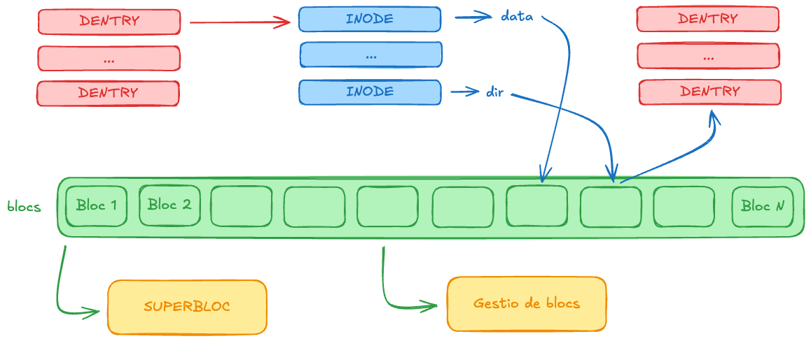
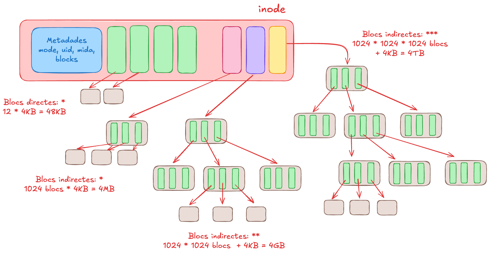
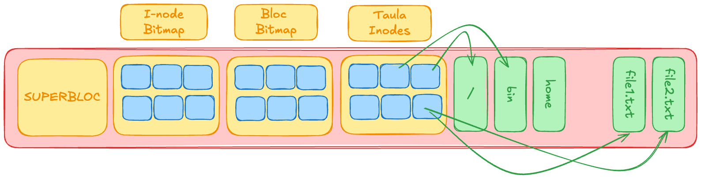
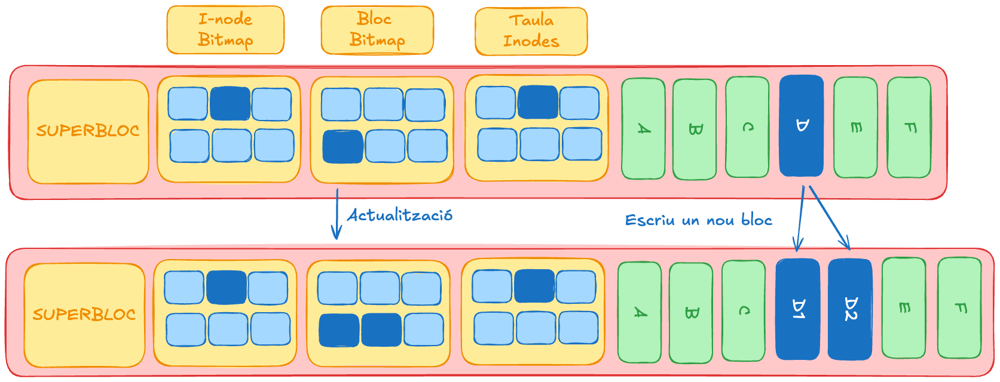

classDiagram
direction LR
class Superbloc {
<<On-Disk i In-Memory>>
+ Tipus FS (Ext4, XFS)
+ Mida del Volum
+ Punter a llistes d'Inodes Lliures
}
class Inode {
<<On-Disk i In-Memory>>
+ Num Inode Únic
+ Pointers a Blocs de Dades
+ Permisos/ACLs
+ UID/GID, Timestamps
}
class Dentry {
<<In-Memory Cache>>
+ Nom del Fitxer/Directori
+ Punter a Inode
+ Punter al Dentry Pare
}
class FileObject {
<<In-Memory>>
+ File Descriptor FD
+ Offset de Lectura/Escriptura Actual
+ Punter a Dentry (Path)
}
Superbloc "1" --> "*" Inode : Gestiona
Dentry "1" --> "1" Inode : Caching · Nom -> Metadata
FileObject "1" --> "1" Dentry : Resolució de Path
Inode "1" --> "*" DataBlocks : Adreçament
%% Colors per a claredat tècnica
classDef memory fill:#eaf7ff,stroke:#007bff
classDef disk fill:#f9f5dd,stroke:#c4aa18
class Dentry
FileObject memory
class Inode
Superbloc disk
Sistema de fitxers (I)
Unitat 3 · Administració i Manteniment de Sistemes i Aplicacions (AMSA)
Jordi Mateo Fornés
Introducció
Necessitat d’un Sistema de Fitxers (I)
La implementació d’un Sistema de Fitxers (FS) és essencial per a l’organització, emmagatzematge i recuperació eficient de la informació en qualsevol sistema operatiu modern.
Observació
En els sistemes operatius moderns (UNIX-like), el seu rol s’estén molt més enllà de la gestió de dades persistents al disc, abracant una filosofia fonamental.
Everything is a File
Necessitat d’un Sistema de Fitxers (II)
| Tipus de Recurs | Exemple de Path | Sistema de Fitxers |
|---|---|---|
| Procés/Estat del Kernel | /proc/PID (p. ex., /proc/1234/status) |
procfs (Memòria, no disc) |
| Dispositiu de Blocs | /dev/sda1 |
devfs o udev |
| Punts de Configuració | /etc/hosts, /usr/bin/comando |
FS persistent (Ext4, XFS) |
| Dades d’Usuari | /home/username/documents |
FS persistent |
| Xarxa | /dev/tcp/80 (en certs entorns, e.g., Plan 9) |
Ús de Sockets com a File Descriptors |
Avantatge
La implementació d’un sistema de fitxers permet unificar l’accés a recursos heterogenis. El kernel pot tractar una E/S a /dev/sda1 (blocs físics) i una E/S a /proc/cpuinfo (informació virtual) utilitzant la mateixa API. API.
Dispositius i Device Files
Un Fitxer de Dispositiu (Device File o Node) és un nom assignat a un dispositiu d’E/S (Entrada/Sortida), ja sigui físic (disc, targeta de so) o lògic (port de xarxa, terminal).
| Tipus de Dispositiu | Exemples Comuns | Característica |
|---|---|---|
| Blocs (Block Devices) | /dev/sda (Disc sencer), /dev/sdb1 (Partició), /dev/md0 (RAID) |
Transfereixen dades en blocs de mida fixa. Són cachejables i permeten accés aleatori. |
| Caràcters (Character Devices) | /dev/ttyX (Terminals), /dev/lp0 (Port Paral·lel), /dev/input/mouse0 |
Transfereixen dades seqüencialment caràcter a caràcter. No tenen caching de blocs. |
Els drivers és el conjunt de rutines del kernel que defineix com s’ha de dur a terme la comunicació específica amb el Hardware mitjançant interrupcions, accés directe a memòria (DMA) i E/S programada. Sense el driver, el fitxer a /dev seria inútil.
Abstraccions Bàsiques del VFS
Virtual Filesystem Switch (VFS)
Un Sistema de Fitxers (FS) és la capa lògica fonamental que gestiona l’accés i l’organització dels objectes (fitxers i directoris) sobre un dispositiu d’emmagatzematge.
Múltiples FS actius
És habitual que un sistema operatiu gestioni simultàniament diverses instàncies de sistemes de fitxers diferents:
- Ext4 per a dades d’usuari (
/home) - Btrfs per a backups automàtics
- tmpfs per a fitxers temporals (
/tmp) - procfs per a informació del kernel (
/proc)
Cadascun muntat en un punt d’accés lògic diferent.
Abstraccions Comunes del VFS
Tot i les diferències estructurals a nivell de disc, el VFS (Virtual Filesystem Switch) del kernel utilitza abstraccions uniformes per oferir una interfície consistent als processos.
| Abstracció | Ubicació | Funció Tècnica | Persistència |
|---|---|---|---|
| Superbloc | Disc + Memòria | Conté metadata global del FS: tipus, mida, estat, punters clau | Persistent |
| Inode | Disc + Memòria | Metadata del fitxer: permisos, timestamps, punters a blocs de dades | Persistent |
| Dentry | Només Memòria | Entrada de Directori: cacheja nom del fitxer ↔︎ inode | Temporal |
| File Object | Només Memòria | Representa un fitxer obert per un procés (file descriptors) | Temporal |
Permet que un programa pugui treballar amb fitxers Ext4, XFS, NTFS o FAT32 sense modificar ni una sola línia de codi.
Jerarquia Lògica de les Abstraccions
Per entendre com el kernel mapeja un nom de fitxer a les dades, visualitzem la interacció entre les estructures in-memory i on-disk.
Impacte del Dentry
Una Dentry Cache saturada o poc eficient pot degradar significativament el rendiment del sistema (I/O latency), ja que el kernel es veu forçat a re-llegir l’estructura de directoris directament del disc.
Relacions In-Memory del VFS
- Múltiples descriptors de fitxer poden apuntar al mateix fitxer (
dup()). - Múltiples abstraccions de fitxer poden apuntar a la mateixa
Dentry(obrim el mateix path diverses vegades). - Múltiples
Dentriespoden apuntar al mateixInode(Hard Links).
El Superbloc
El Superbloc és el punt de referència absolut de qualsevol Sistema de Fitxers (FS). Sense aquesta estructura, el kernel no pot ni tan sols intentar muntar el volum.
Avís
Si el Superbloc es corromp (per un error de disc o d’E/S), el sistema de fitxers esdevé inaccessible fins que es restaura una de les seves còpies de seguretat (backup copies).
Per aquest motiu, els FS moderns mantenen múltiples còpies del superbloc distribuïdes pel volum.
Organització Física del Superbloc
Abstraccions del Superbloc
| Component | Funció | Ubicació |
|---|---|---|
| Superbloc | Conté la metadata global del FS: tipus, mida, estat, i punters clau. | Inici del FS (i còpies de seguretat). |
| IMAP (Inode Map) | Bitmap per a l’assignació i desassignació d’Inodes. Indica quins Inodes estan lliures o en ús dins de la IZONE. | Bloc(s) assignat(s) pel Superbloc. |
| DMAP (Data Map) | Bitmap per a l’assignació i desassignació de Blocs de Dades. Indica quins blocs de la DZONE estan lliures o en ús. | Bloc(s) assignat(s) pel Superbloc. |
| IZONE | Àrea que conté les estructures d’Inode dels fitxers. | Després dels mapes. |
| DZONE | Àrea que conté les dades d’usuari (el contingut real dels fitxers). | Després de la IZONE. |
Estructura i Implementació del Superbloc
El Superbloc no només s’autodefineix, sinó que defineix l’arquitectura de tota la partició:
fs_type: El tipus de FS (p. ex., EXT4_MAGIC).s_blocks_count: El nombre total de blocs al FS.s_log_block_size: Defineix la mida del bloc lògic (p. ex., 1K, 4K). Tota la I/O es fa en aquesta unitat.- Punters a Bitmaps: Adreces del primer bloc de l’IMAP i el DMAP.
- Estat del FS: Indica si el FS va ser desmuntat netament o si va patir un crash (
s_state- important per al fsck).
Mapes de Bits (Bitmaps)
Els mapes de bits són crucials per a l’eficiència en l’assignació:
- IMAP (Inode Bitmap): Cada bit representa l’estat d’un únic Inode a la IZONE.
1= En ús,0= Lliure. - DMAP (Data Bitmap): Cada bit representa l’estat d’un únic bloc a la DZONE.
1= Ocupat per dades,0= Lliure per assignació.
Optimització (Caching)
Quan el FS es munta, el kernel carrega el Superbloc i, almenys parcialment, els mapes IMAP i DMAP a la memòria. Això permet que les noves assignacions de fitxers i blocs siguin extremadament ràpides sense requerir una E/S de disc constant.
FS Grans
Es carreguen parcialment i a demanda per no gastar massa memòria en FS grans.
Operacions Bàsiques del VFS i crides al Sistema
Mapping: Crides de Sistema → VFS
| Crida al Sistema | Operació VFS | Descripció |
|---|---|---|
mount() |
vfs_mount() |
Muntar un FS. |
open() |
vfs_open() |
Obrir un fitxer (i obtenir un FD). |
stat() / fstat() |
vfs_stat() / vfs_fstat() |
Consultar atributs del fitxer. |
read() / write() |
vfs_read() / vfs_write() |
Llegir o escriure dades. |
create() / delete() |
vfs_create() / vfs_unlink() |
Crear i eliminar fitxers. |
close() |
vfs_close() |
Tancar un fitxer |
El VFS és l’abstracció de Linux que permet gestionar múltiples tipus de FS (Ext4, XFS, NTFS) de manera transparent.
graph TD
A[Crida al Sistema open, read] --> B{VFS};
B -->|Operació abstracta| C1[Driver FS Específic Ext4];
B -->|Operació abstracta| C2[Driver FS Específic XFS];
C1 --> D[Subsistema d'Emmagatzematge E/S];
C2 --> D;
style B fill:#eaf7ff,stroke:#007bff
style C1 fill:#f9f5dd,stroke:#c4aa18
style C2 fill:#f9f5dd,stroke:#c4aa18
Montatge d’un FS
| Pas | Descripció | Implicació |
|---|---|---|
| 1. Entrada/Sortida | Input: Dispositiu de blocs (Partició). Output: Dentry arrel del FS. | |
| 2. Check Device | Validació de l’estructura inicial del FS. | |
| 3. Llegir Superbloc | Determinar paràmetres (mida de bloc, magic number). Carregar el Superbloc a memòria. | Crític: Estableix el context global. |
| 4. Crear Inode i Dentry | Localitzar el Root Inode (e.g., inode 2 a Ext4) i crear l’estructura Dentry arrel a la memòria. | Inici de la navegació lògica. |
Obertura d’un Fitxer
sequenceDiagram
participant P as Procés
participant VFS as VFS (Kernel)
participant FS as Driver de FS (read_inode)
P->>VFS: open -> /a/b/fitxer.txt
VFS->>VFS: 1. Per cada component a, b, fitxer.txt:
VFS->>VFS: Resoldre Dentry Pare (Cache)
VFS->>FS: 2. Carregar Inode si no està en cache (via Num. Inode)
VFS->>VFS: 3. Final: Crear nou **FILE OBJECT**
VFS->>P: 4. Assignar **File Descriptor** (FD)
Consultar Atributs
sequenceDiagram
participant P as Procés
participant VFS as VFS (Kernel)
participant FS as Driver de FS (read_inode)
P->>VFS: stat -> fitxer.txt o fstat -> FD
VFS->>VFS: 1. Accés a l'Inode via FD
VFS->>FS: 2. Si no està en cache, llegir Inode del disc
FS-->>VFS: 3. Retornar Atributs
VFS-->>P: 4. Retornar Atributs UID, GID, Permisos, Mida, Timestamps
Operacions de Lectura
sequenceDiagram
participant P as Procés
participant VFS as VFS
participant FS as Driver de FS · read
P->>VFS: read -> FD, buf, len
VFS->>VFS: 1. Validar FD i permisos
VFS->>VFS: 2. Calcular blocs a llegir -> offset, len
VFS->>FS: 3. Llegir dades file->dentry->inode->data blocks
FS-->>VFS: 4. Retornar dades a VFS
VFS-->>P: 5. Copiar dades a l'espai d'usuari
Operacions d’Escriptura
sequenceDiagram
participant P as Procés
participant VFS as VFS
participant PC as Page Cache
participant FS as Driver FS
participant J as Journal
participant BD as Block Device
P->>VFS: write -> fd=5, buffer, 4096
VFS->>VFS: Validar FD i permisos d'escriptura
VFS->>VFS: Calcular nous blocs necessaris
alt Fitxer necessita créixer
VFS->>FS: Assignar nous blocs de dades
FS->>FS: Actualizar bitmaps i inode
FS->>J: Registrar transacció al journal
end
VFS->>PC: Escriure dades a la page cache · dirty pages
VFS-->>P: Retornar bytes escrits
Note over PC,BD: Writeback asíncron
PC->>BD: Flush dirty pages al disc
J->>BD: Commit transacció journal
Escriptura Asíncrona i Writeback
La escriptura asíncrona permet que les operacions d’escriptura es realitzin en segon pla, millorant la resposta del sistema. Les dades es desplacen a la page cache i es poden escriure al disc més tard.
- Dirty Pages: Pàgines a la memòria que han estat modificades però encara no s’han escrit al disc.
- Writeback: Procés de transferir les dirty pages de la memòria al disc.
- Journaling: Mecanisme per assegurar la integritat del FS en cas de fallada durant el writeback.
- Flush: Operació per escriure immediatament les dirty pages al disc.
Creació de Directoris
sequenceDiagram
participant P as Procés
participant VFS as VFS
participant FS as Driver de FS · mkdir
P->>VFS: mkdir -> /a/b/novedirectori
VFS->>VFS: 1. Resoldre Dentry Pare -> /a/b -> Determinar Inode Pare
VFS->>VFS: 2. Llegir blocs de dades del directori pare · Trobar espai per a nova Dentry
VFS->>FS: 4. Crear nou Inode per al directori
FS-->>VFS: 5. Retornar Num. Inode
VFS->>VFS: 6. Afegir Dentry al directori par · Escriure els blocs de dades del directori pare modificats
VFS-->>P: 8. Retornar èxit o error
Eliminació de Fitxers
sequenceDiagram
participant P as Procés
participant VFS as VFS
participant FS as Driver de FS · unlink
P->>VFS: unlink -> /a/b/fitxer.txt
VFS->>VFS: 1. Resoldre Dentry Pare -> /a/b -> Determinar Inode Pare
VFS->>VFS: 2. Llegir blocs de dades del directori pare · Trobar i esborrar la Dentry
VFS->>VFS: 4. Comprovar enllaços -> Si és l'últim enllaç, desassignar blocs de dades i blocs d'inode
VFS->>FS: 6. Actualitzar metadades al disc
FS-->>VFS: 7. Confirmació d'actualització
VFS-->>P: 8. Retornar èxit o error
Superbloc i Operacions d’Inode
El VFS (Virtual Filesystem Switch) estableix dos conjunts d’operacions que el driver de cada Sistema de Fitxers ha d’implementar. Aquests mètodes permeten al kernel interactuar amb les metadades de forma uniforme.
| Operació | Funció Tècnica | Propòsit |
|---|---|---|
fill_super() |
Llegeix l’estat global del FS (total/lliure d’Inodes i Blocs). | Inicialització i muntatge. |
write_super() |
Persisteix les estadístiques i l’estat actualitzat al disc. | Canvis en l’assignació. |
put_super() |
Allibera la memòria associada a la instància del FS. | Desmuntatge (umount). |
Operacions de l’Inode
Malgrat el nom, la majoria d’aquestes operacions tracten amb la gestió de les Dentries i la jerarquia de noms de fitxer (no el contingut de l’Inode en si).
- Creació i Cerca:
create,lookup,link,unlink. - Directori i Enllaços:
mkdir,rmdir,symlink,readlink,rename.
Tipus d’Inode
Els drivers de FS treballen amb dos tipus d’Inode:
- VFS Inode: Estructura genèrica utilitzada pel kernel.
- FS Inode: Estructura interna del driver (p. ex., la versió Ext4 o XFS).
El driver és responsable de la conversió entre aquestes dues estructures segons sigui necessari.
Cache i Optimitzacions
Cache d’Inodes (Icache)
Aquesta cache emmagatzema les metadades del fitxer a memòria (l’estructura de l’Inode), evitant lectures repetitives a la IZONE del disc.
- Estructura: S’indexa mitjançant una Taula Hash (hash table).
- Clau Hash: Es genera a partir de la tupla (Superbloc, Número d’Inode).
- Política: Els Inodes es mantenen fins que el FS es desmunta, s’elimina el fitxer, o hi ha pressió de memòria (memory pressure).
Cache de Dentries
La Dcache és l’eina més important per a la resolució ràpida de camins (path lookup). Cacheja la relació Nom \(\rightarrow\) Inode.
| Estat de la Dentry | Implicació Tècnica |
|---|---|
Used |
L’objecte està en ús (p. ex., associat a un FILE Objecte). El seu d_inode és vàlid. |
Unused |
El d_inode és vàlid, però l’objecte Dentry no està sent utilitzat activament per cap procés. |
Negative |
L’d_inode no és vàlid. S’utilitza per recordar que un fitxer no existeix o ha estat eliminat, evitant cerques futures innecessàries al disc. |
Optimització de la Dentry Cache
L’accés a l’Inode cache (per al seu alliberament en condicions de memòria baixa) utilitza l’estat d’ús, basat en el Superbloc i el número d’Inode. La Dentry cache també fa servir taules hash per a cerques ultra-ràpides.
Cache de pàgines: Dades i E/S
La Cache de pàgines és el mecanisme principal del kernel per a la gestió de dades d’E/S, utilitzat per tots els sistemes de fitxers. Emmagatzema els blocs de dades del fitxer a la memòria del sistema,per a la lectura ràpida i per a l’escriptura diferida.
Gestió de Memòria
Linux reutilitza la memòria lliure com a cache, però l’allibera quan un procés necessita RAM.
- Dades Cachejades: Només dades de fitxers, no metadades de nivell de bloc (block device data).
- Mecanismes d’E/S: Suporta operacions
read(),write()immap()(mapes de memòria).
Estructura Interna: Ràdix-Arbre
La Cache de pàgines utilitza una estructura de dades Radix Tree per mapejar de manera eficient els offsets de fitxer a les pàgines de memòria. Això permet accés ràpid a pàgines de dades grans.
Sistemes de Fitxers Específics
FAT: File Allocation Table
- Sistema de fitxers creat el 1977 i popularitzat gràcies a MS-DOS.
- Encara popular avui (FAT32): USB, targetes de memòria, partició d’arrencada EFI.
- File Allocation Table: Estructura de llista enllaçada que conté informació sobre els blocs ocupats per cada fitxer.
- També determina si un bloc està en ús o no.
FAT: Organització de Directoris
Els directoris en FAT són fitxers especials que contenen entrades de 32 bytes per a cada fitxer o subdirectori. Cada entrada inclou: nom, atributs, timestamps, primer clúster i mida del fitxer.
| Nom | Index | Dir? | Permisos |
|---|---|---|---|
. |
2 | Sí | rwx |
Windows |
3 | Sí | rwx |
Users |
4 | Sí | rwx |
pagefile.sys |
5 | No | r– |
El superbloc actua com a punt de referència per a tot el sistema de fitxers, emmagatzemant informació crítica com la mida del clúster, la ubicació de la FAT i la ubicació del directori arrel.
FAT: Limitacions Tècniques
Limitacions de capacitat:
- FAT32: màxim 2TB per volum
- FAT32: màxim 4GB per fitxer
Problemes de rendiment:
- Localització de blocs lliures: scan complet de la FAT
- Fragmentació severa (pobra localitat)
- Fragmentació de metadata: cerques costoses
- Llistes enllaçades ineficients per fitxers grans
Impacte pràctic:
- Un fitxer de 16MB (4096 clústers de 4KB) requereix 4096 lectures de la FAT per accés seqüencial complet
EXT: Extended File System
Els sistemes EXT van ser dissenyats específicament per a Linux com a evolució dels sistemes Unix tradicionals.
Evolució:
- ext (1992): Primera versió, problemes de rendiment
- ext2 (1993): Inodes, directoris flexibles
- ext3 (2001): Journaling per a consistència
- ext4 (2008): Extents, millor rendiment
Característiques:
- Inodes com a element bàsic
- Bitmaps per gestió d’assignació
- Block Groups per localitat de dades
- Journaling per integritat
EXT: Estructura de l’Inode
L’inode és el nucli del sistema EXT. Cada fitxer té almenys un inode que conté tota la seva metadata:
struct ext4_inode {
uint16_t i_mode; // Permisos i tipus de fitxer
uint16_t i_uid; // User ID del propietari
uint32_t i_size; // Mida del fitxer en bytes
uint32_t i_atime; // Últim temps d'accés
uint32_t i_ctime; // Temps de creació de l'inode
uint32_t i_mtime; // Últim temps de modificació
uint16_t i_gid; // Group ID del propietari
uint16_t i_links_count; // Nombre de hard links
// Punters a blocs de dades
uint32_t i_block[15]; // Blocs directes i indirectes
/*
* i_block[0-11]: 12 punters directes (48KB amb blocs de 4KB)
* i_block[12]: 1 punter simple indirecte (4MB addicionals)
* i_block[13]: 1 punter doble indirecte (4GB addicionals)
* i_block[14]: 1 punter triple indirecte (4TB addicionals)
*/
};Els i-nodes consumeixen un 10% de l’emmagatzematge del disc (es pot configurar en el moment de la creació del sistema de fitxers).
EXT: Adreçament de Blocs (ext2)
Un fitxer de 100MB (25.600 blocs de 4KB) necessita 2 nivells d’indirecció, requerint múltiples lectures de metadades abans d’accedir a les dades reals.
EXT: Organització
- Bitmap d’Inodes: mapa de bits d’inodes ocupats/lliures.
- Bitmap de Blocs: mapa de bits de blocs ocupats/lliures.
- Taula d’Inodes: cada entrada és un únic inode.
EXT3: Problema de Consistència (I)
Imagineu que un fitxer necessita augmentar la seva mida, i això requereix assignar un nou bloc de dades i actualitzar l’inode per reflectir aquesta nova assignació. Aquest procés implica múltiples operacions d’escriptura al disc.
EXT3: Problema de Consistència (II)
Imagina que el procés es veu interromput (crash) a mitja operació.
Journaling - Consistència
sequenceDiagram
participant P as Procés
participant K as Kernel
participant J as Journal
participant FS as Filesystem
P->>K: write() - ampliar fitxer
Note over K,J: FASE 1: Preparació
K->>J: Crear transacció: T1
K->>J: Nou bloc dades · Update bitmap · Update inode
K->>J: COMMIT transacció T1
Note over K,FS: FASE 2: Aplicació
K->>FS: Aplicar canvis del journal
K->>J: Marcar T1 com a completa
K-->>P: write() completat
Journaling: Modes
Journaling Complet: Tant les dades com les metadades s’escriuen al journal abans d’aplicar-les al sistema de fitxers. Màxima seguretat, però més lent.
Journaling de Metadades: Només les metadades s’escriuen al journal. Les dades es poden escriure directament al sistema de fitxers. Equilibri entre seguretat i rendiment.
Escriptura Diferida (Writeback): Les dades i les metadades es poden escriure directament al sistema de fitxers sense passar pel journal. Màxim rendiment, però risc de corrupció de dades en cas de fallada.
ext3 · Journaling
- Pre-escriptura (Write-Ahead Logging):
- Abans d’escriure qualsevol dada o metadada al disc, es registra la intenció d’aquesta escriptura en un registre especial anomenat journal. Garanteix que les operacions es completin correctament, fins i tot en cas de fallades.
- Si escriu el journal correctament:
- La transacció es marca com a completa. Els canvis es poden aplicar al sistema de fitxers de manera segura.
- Si la escriptura del journal es veu interrompuda:
- La transacció no es completa (pèrdua de dades), però el sistema de fitxers roman consistent.
- Si el journal s’escriu correctament, però el disc no:
- Temporalment, el sistema de fitxers perd la consistència.El registre té la informació per restaurar-la (durant l’arrencada, els journals inacabats es completen).
ext4: Extents per a Millor Eficiència
El principal problema (ext2/ext3) era la gestió ineficient dels punters a blocs de dades, especialment per a fitxers grans.
Un extends és un descriptor que representa un rang contigu de blocs, millorant l’eficiència en l’assignació i reduint la fragmentació.
- Rangs de blocs físics contigus, descrits amb una entrada (bloc inicial + nombre de blocs).
- Un extent pot mapar fins a 128 MiB (blocs de 4KB) d’espai contigu amb blocs de 4 KiB.
- L’inode d’ext4 pot contenir directament fins a 4 extents; si el fitxer és gran o fragmentat, s’utilitza una estructura d’arbre (HTree) per indexar més extents.
ext4: Estructura d’un Extent
graph TD
A[Inode] --> B[Extent Header]
B --> C1[Extent 1]
B --> C2[Extent 2]
B --> C3[Extent 3]
B --> C4[Extent 4]
C1 --> D1[Bloc Físic 1000 - 1023]
C2 --> D2[Bloc Físic 2000 - 2023]
C3 --> D3[Bloc Físic 3000 - 3023]
C4 --> D4[Bloc Físic 4000 - 4023]
style A fill:#eaf7ff,stroke:#007bff
style B fill:#f9f5dd,stroke:#c4aa18
ext4: HTree/Btree
Un B-tree és una estructura d’arbre auto-balancejada que manté dades ordenades i permet cerques, insercions i eliminacions en temps logarítmic.
Un HTree és una variant de B-tree utilitzada específicament per indexar fitxers i directoris en ext4.
La principal diferència és que les entrades es distribueixen en nodes fulla i no fulla, amb una estructura de capçalera específica per a cada node.
Inode/Arrel: Apunta a la capçalera de l’HTree.
graph TD
A[Inode] --> B[HTree Root]
B --> C1[Node No Fulla 1]
B --> C2[Node No Fulla 2]
C1 --> D1[Node Fulla 1]
C1 --> D2[Node Fulla 2]
C2 --> D3[Node Fulla 3]
C2 --> D4[Node Fulla 4]
D1 --> E1[Extent 1]
D1 --> E2[Extent 2]
D2 --> E3[Extent 3]
D3 --> E4[Extent 4]
D4 --> E5[Extent 5]
- Nodes no fulla: Indexen altres nodes, permetent que l’arbre creixi i es mantingui balancejat.
- Nodes fulla: Contenen les extents, que són rangs de blocs físics contigus.
- Extents: Descriuen els blocs reals del fitxer o directori.
ext4 · Assignació multibloc i retrassada
- Assignació Multibloc:
- ext4 pot assignar múltiples blocs a la vegada, agrupant blocs consecutius per minimitzar la fragmentació.
- Això redueix la sobrecàrrega d’assignació i millora la localitat de les dades.
- Assignació Retardada:
- L’assignació retardada espera a bloquejar l’espai fins just abans d’escriure, optimitzant la distribució de blocs.
- Això permet agrupar escriptures i minimitzar la fragmentació.
Exercicis Propostas
- Administració Bàsica de Sistemes de Fitxers
- Discussió: Secure Boot és realment segur?: Cerca notícies recents sobre Secure Boot i comparteix-les al fòrum del curs. Debatiu sobre avantatges, desavantatges, vulnerabilitats conegudes i experiències personals.
- Pràctica 01: Snapshots i restauració amb systemd i initramfs
That’s all
Take Home Message
Els sistemes de fitxers són complexos i crítics per al rendiment i la fiabilitat del sistema operatiu. El VFS proporciona una capa d’abstracció que permet gestionar diferents tipus de sistemes de fitxers de manera uniforme. Sistemes de fitxers com EXT4 han evolucionat per abordar problemes de rendiment i consistència, incorporant característiques com els extents i el journaling.


Unitat 3 · Administració i Manteniment de Sistemes i Aplicacions (AMSA) 🏠